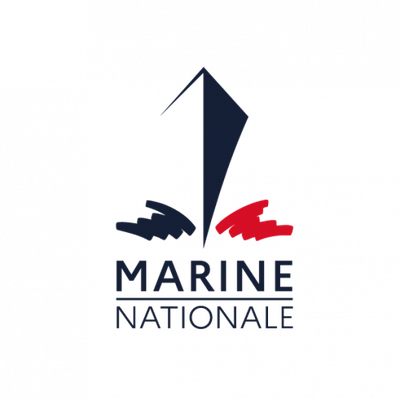
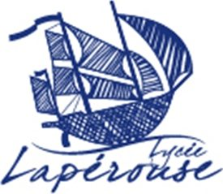
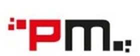
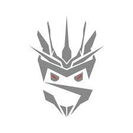
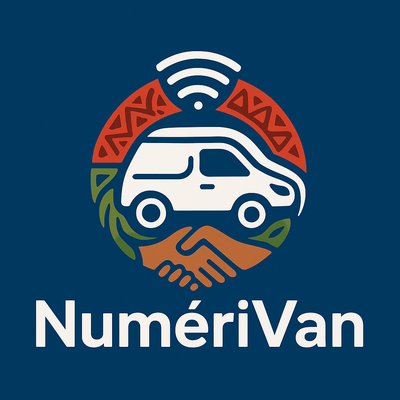
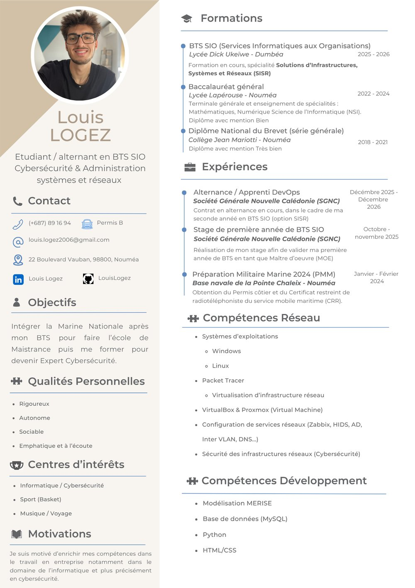

- nom
- Louis LOGEZ
- formation
- BTS SIO · option SISR
- poste
- Apprenti DevOps · SGNC
- lieu
- Nouvelle-Calédonie
- statut
- en alternance
À propos de moi
Curieux, impliqué et autonome.
Je suis une personne curieuse, impliquée et autonome. Passionné par l’informatique et la cybersécurité depuis plusieurs années, j’aime apprendre de nouvelles choses dans ce domaine et aider les autres.
- Curieux
- Impliqué
- Autonome
- Rigoureux
- Sociable
- À l’écoute

// objectif professionnel
Expert cybersécurité dans la Marine nationale
J’envisage une carrière dans la Marine nationale en tant qu’expert cybersécurité. Je m’intéresse également à l’infrastructure et au développement, deux domaines complémentaires de la sécurité informatique.
- 01BTS SIO option SISR
- 02École de Maistrance
- 03Expert cybersécurité
Formations
-
2018 – 2021
Diplôme National du Brevet
Collège Jean Mariotti – Nouméa
Mention Très bien -
2022 – 2024

Baccalauréat général
Lycée Lapérouse – Nouméa
Spécialités : Mathématiques, Numérique et Sciences Informatiques (NSI)
Mention Bien -
2025 – 2026
BTS SIO – Services Informatiques aux Organisations
Lycée Dick Ukeiwë – Dumbéa
Option SISR (Solutions d’Infrastructure, Systèmes et Réseaux), en alternance
En cours
Expériences
-

À partir du 4 janvier 2027 À venirPartner Micro — Technicien informatique N1 & N2
CDD de 6 mois : support informatique de niveau 1 et 2.
-
Depuis décembre 2025 En cours
Société Générale Nouvelle-Calédonie — Apprenti DevOps
Équipe Systèmes et Réseaux : conformité NIST, automatisation, supervision.
-
27 octobre – 28 novembre 2025 Stage
Société Générale Nouvelle-Calédonie — Stagiaire
Supervision et alerting de microservices (Grafana, Prometheus).
-

1er octobre 2025 3e placeHackagou 2025 — Capture The Flag
Compétition de cybersécurité de Nouvelle-Calédonie, thème « Apocalypse : une IA devenue folle menace l’humanité ».
Équipe « DevOps » — 3e au classement général.
-

17 – 19 septembre 2025 Défi entrepreneurialCréathlon 2025 — Entreprendre en économie sociale et solidaire
Défi entrepreneurial : projet NumeriVan, formation au numérique dans les « déserts numériques » via une application.
Pour une solidarité qui bouge !
-
Janvier – février 2024 Engagement
Préparation Militaire Marine (PMM)
Base navale de la Pointe Chaleix – Nouméa.
Obtention du permis côtier et du CRR (Certificat Restreint de Radiotéléphoniste).
-
Juillet 2021 Découverte
Geocal — Stage de découverte
Découverte des services commercial, administratif et technique.

Mon CV
Vous pouvez consulter mon CV en ligne ou le télécharger au format PDF.
Loisirs et centres d’intérêt
-
Basketball
Joueur depuis 7 ans
-
Informatique et cybersécurité
CTF et veille technologique
-
Voyages et musique
Découvrir et s’évader